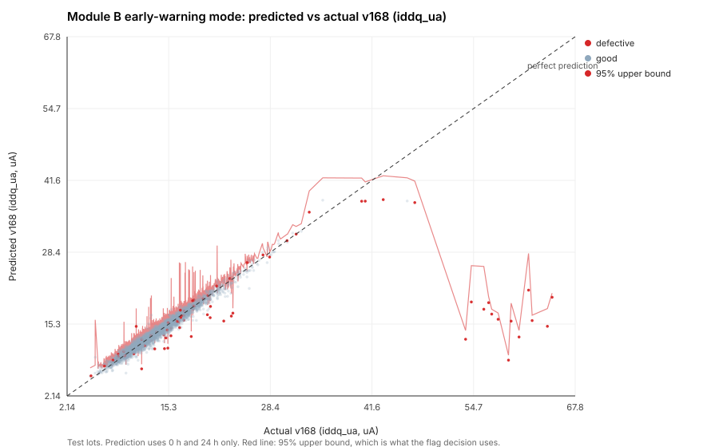

Chapter 4
Module B: forecasting the 168 h value from the first 24 hours
If the 0 h and 24 h readings already say where a part is heading, the decision can move six days earlier. Module B forecasts each parameter's 168 h value, puts an upper bound on it, and compares that bound to a safe limit.
Two modes, never blended
Early-warning mode sees 0 h and 24 h only; it is the headline. Mid-test
mode adds 96 h. modulea/moduleb.py refuses to build an early-mode feature matrix
containing any 96 h, 168 h, censoring or label-derived column, so the separation is mechanical.
Features are the readings, the 0→24 h change and rate, the lot's median at each visible
checkpoint, and lot-relative robust z-scores of level and drift.
The model ladder
| Model | iddq_ua | leakage_na | prop_delay_ns | supply_current_ma | vth_shift_mv |
|---|---|---|---|---|---|
| 1. Linear extrapolation | 2.868 | 6.929 | 0.313 | 3.329 | 5.135 |
| 2. Power law, β from training lots | 1.167 | 2.378 | 0.147 | 1.359 | 1.513 |
| 3. Huber regression | 0.604 | 1.310 | 0.068 | 0.684 | 0.839 |
| 4. LightGBM, MAE objective | 0.610 | 1.297 | 0.067 | 0.677 | 0.842 |
| 5b. Quantile forest (point) | 0.606 | 1.312 | 0.068 | 0.685 | 0.848 |
Linear extrapolation over-predicts, as it must: degradation here is sub-linear (β between 0.5 and 1), so the early slope overstates the long-run rate. That check is a gate on the generator and the features agreeing. LightGBM improves on it 4.7× on Iddq. Huber regression ties LightGBM, which says the remaining signal is close to linear once the power-law structure is in the features. Adding the 96 h reading improves error a further 22–28%.
Always both columns: good and defective
| Parameter | MAE, all | Good parts | Defective parts | Ratio |
|---|---|---|---|---|
iddq_ua | 0.610 µA | 0.481 | 7.753 | 16.1× |
leakage_na | 1.297 nA | 1.110 | 11.642 | 10.5× |
prop_delay_ns | 0.067 ns | 0.062 | 0.387 | 6.3× |
supply_current_ma | 0.677 mA | 0.621 | 3.786 | 6.1× |
vth_shift_mv | 0.842 mV | 0.780 | 4.231 | 5.4× |

Upper bounds are optimistic, and we say so
The decision uses a 95% upper bound, not the point forecast: for a safety call the plausible worst case is what matters. Delivered coverage on test lots is 0.926–0.948 for LightGBM's quantile objective and 0.936–0.954 for a quantile forest, against a nominal 0.95. Both are slightly too narrow. That is the gap the conformal layer closes.
Survivorship bias, in absolute units
A model trained only on parts that survive to 168 h has never seen the worst drifters. On the 88 pulled parts in the test lots it under-predicts Iddq by 30.9 µA, which is 62% of the whole datasheet limit. Substituting the datasheet limit as a stand-in target for pulled parts recovers only 0.6 µA of it. The proper fix is a censored-regression loss that treats those parts as "known to exceed"; it is scoped as next work.
The safety slope must be lot-relative too
| Rule (union over five parameters) | Recall | Yield loss | Precision |
|---|---|---|---|
| (a) margin consumption: slope vs remaining headroom | 29.7% | 0.54% | 50.0% |
| (b) lot-derived slope limit, median + 6 MAD-σ | 27.6% | 0.26% | 65.6% |
| (c) power-law projection to a 15-year mission | 63.0% | 31.46% | 3.5% |
| (d) 95% upper bound vs datasheet limit | 0.9% | 0.00% | 100.0% |
| (d) 95% upper bound vs lot-derived safe limit | 16.2% | 0.25% | 54.3% |
Against the datasheet limit the upper-bound rule is almost inert, because every defect is in spec by construction. Against a lot-derived safe limit (the AEC-Q001 dynamic PAT limit at 168 h) the same rule catches 16.2% at 0.25% yield loss. That safe limit is built only from information available at 24 h: the within-lot 168 h spread of earlier lots, centred on this lot's own 24 h median carried forward by the typical drift of earlier lots. Using a lot's own 168 h readings would be time travel. It is the Module A argument one derivative up: compare a part to the batch it was burned in with, not to a fixed number.